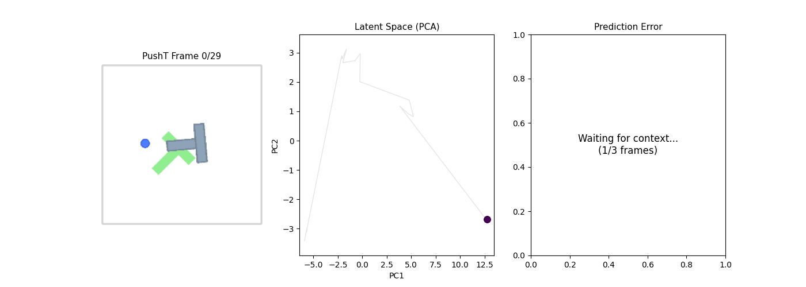
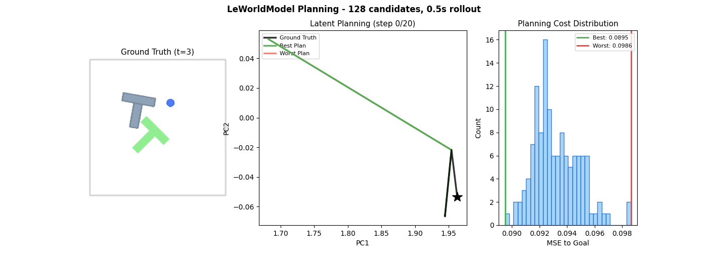
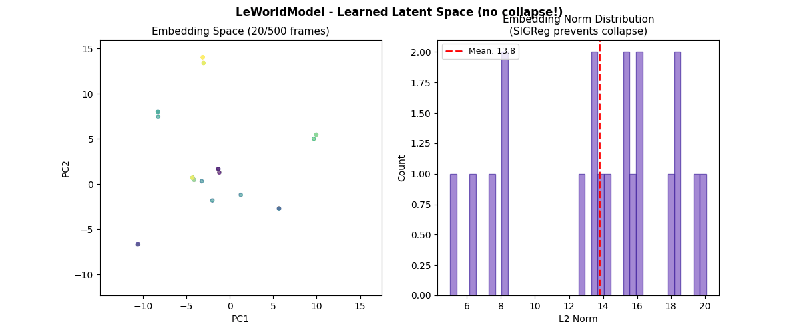
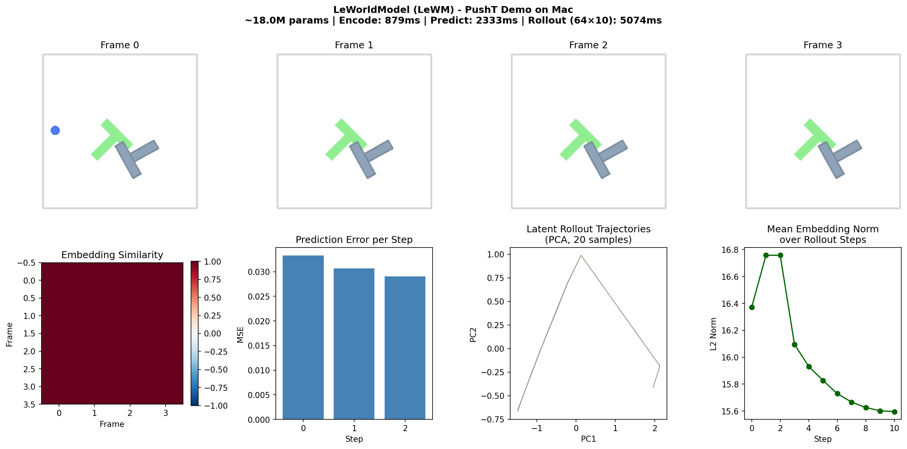

Stable End-to-End Joint-Embedding Predictive Architecture from Pixels.
Trained on Mac (MPS) with 18M parameters and just 2 loss terms.
LeWM is the first JEPA that trains stably end-to-end from raw pixels using only two loss terms: a next-embedding prediction loss (MSE) and SIGReg (anti-collapse regularizer). Prior JEPAs need EMA, stop-gradient, pretrained encoders, or 6+ loss hyperparameters. LeWM needs just one.
Trained on PushT (200 episodes, 60K frames) on Apple MPS for 4 epochs (~80 min total).
| Epoch | Pred Loss | SIGReg Loss | Total Loss |
|---|---|---|---|
| 1 | 0.0445 | 4.933 | 0.488 |
| 2 | 0.0232 (-48%) | 3.665 | 0.353 |
| 3 | 0.0131 (-43%) | 1.759 | 0.171 |
| 4 | 0.0069 (-47%) | 1.599 | 0.151 |
Prediction loss dropped 6.4x over 4 epochs. SIGReg loss decreasing means the latent space is becoming more Gaussian (structured) without collapsing.
As the PushT agent (blue dot) moves and pushes the T-block, the encoder maps each frame to a latent embedding. The trajectory in PCA space is smooth and structured — nearby physical states map to nearby latent points. This emerges purely from training.

128 action candidates are rolled out in latent space in 0.5s. The model ranks plans by distance to goal embedding. Green = best plan (tracks ground truth), Red = worst. This is how LeWM does model-based planning — entirely in the learned latent space.

500 frames encoded — embeddings spread across the space with varied norms (mean 13.8). No collapse! This is the key contribution: SIGReg enforces Gaussian-distributed embeddings, replacing EMA, stop-grad, and other fragile heuristics from prior JEPAs.


PushT is a 2D robotics benchmark: a circular agent (blue dot) must push a T-shaped block (grey) to match a goal pose (green T). It's the headline result where LeWM beats DINO-WM (which uses a pretrained foundation model) using only pixels — no proprioception needed.